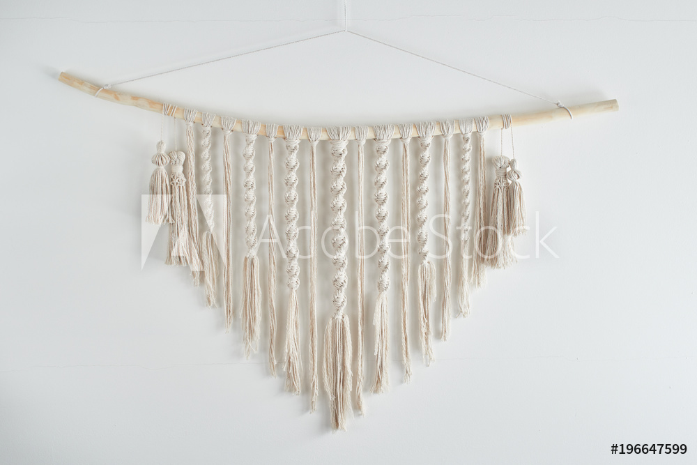

Welcome to the our tutorial for how to create a reverse Larkshead Knot.
The Reverse Larkshead Knot is a popular choice for attaching your macrame cords to the dowel, rod or ring at the top of the project.
simple steps.

Click on the image to learn how
-
Step 1
Fold one macrame cord in half. Place it loop down beneath your dowel with the cords facing up.
-
Step 2
Pull the loop up over the dowel. Pull the cords down through the loop, creating a pretzel shape.
-
Step 3
Pull the two cords together to secure the knot at the top.
-
Step 4

Knot with us soon!
XO